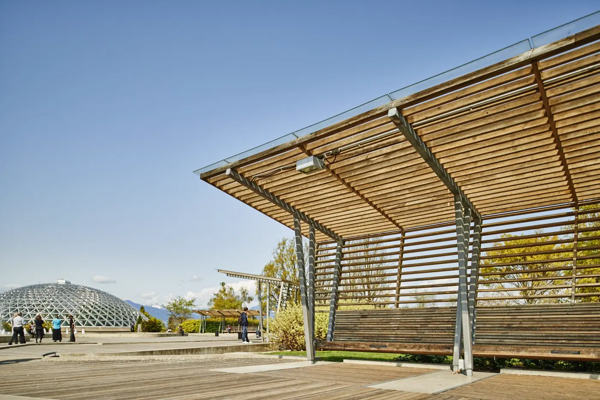
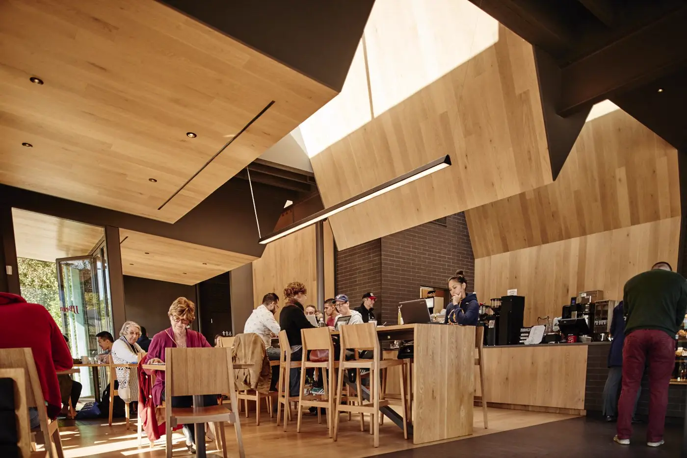
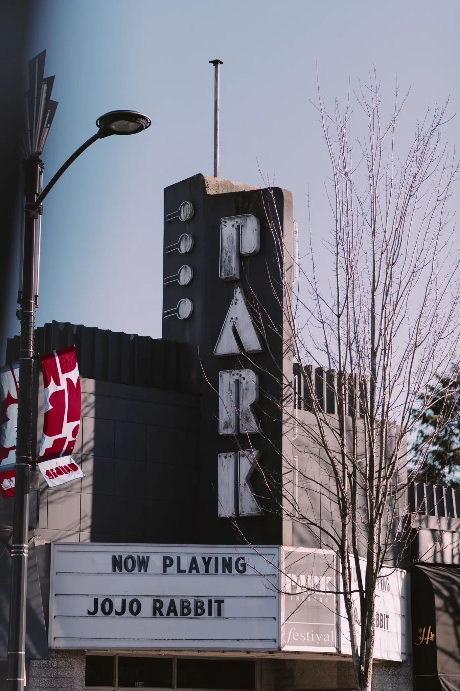
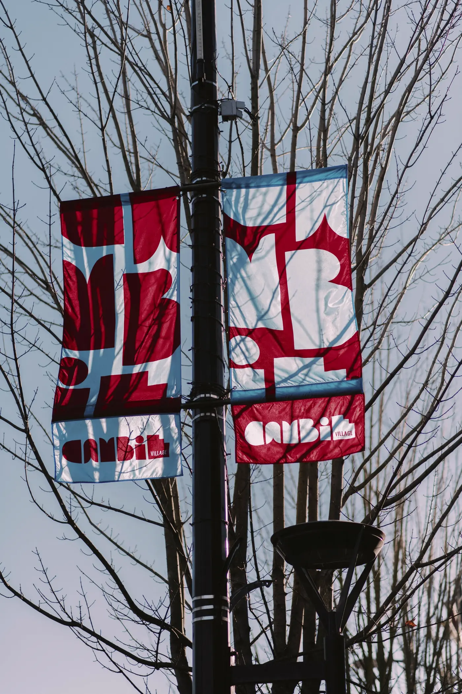

Home / Neighbourhood
The heart of the Cambie Corridor
To the south, Queen Elizabeth Park: 130 acres of gardens, trails and viewpoints. To the north, Cambie Village, lined with grocery markets, restaurants, cafés and one-of-a-kind boutiques. And the Canada Line is right across the street.
91Walk Score: daily errands don't need a car
Getting around
Downtown in 10 minutes, the airport in 15
0 minKing Edward station is across the street
5 minto Oakridge on the Canada Line
10 minto downtown Vancouver
15 minto Richmond and YVR airport
Transit
- Across the street
- At the corner
- 1 stop south
- Buses to UBC & MetrotownNearby
Parks & recreation
- Steps away
- In the park
- 10-min walk
- 10-min walk
- Tennis, pickleball, pitch & putt, disc golfIn the park
Shops, food & fun
- To the north
- Grocery markets & cafésCambie Village
- Cambie Village
- 5 min by train
Around the corner
Queen Elizabeth Park Sidewalk cafés Local coffee The Park Theatre Quiet green spaces Boutiques Cambie Village Tree-lined streets
Morning walks, evening plans




Live where the city connects
See the homes available now, or book a tour and walk the neighbourhood with us.